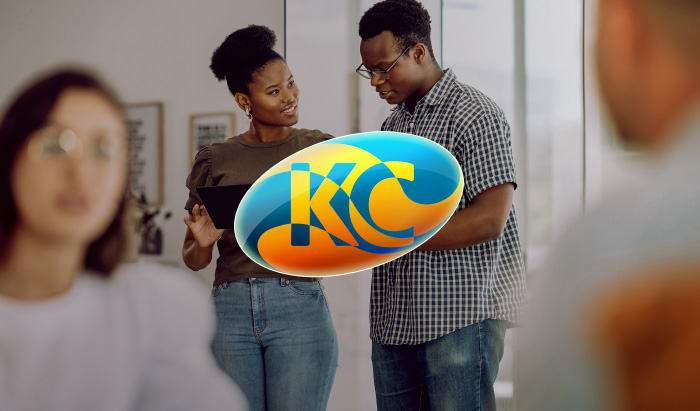

Industry
Software Development
Services
Brand Identity, Graphic Design

The Challenge
Kreativ Code is a software development startup with an enthusiastic computer science graduate behind it. The only thing missing was a brand image that perfectly captured their story.
Approaching me at a time when their only existing element was the company name, I was tasked with helping them realise their visual identity.
The Solution
My central responsibilities consisted of strategising, concept development and overseeing the production for all of this young company's branding elements.
The Process
Development
I started with a customised creative brief, aiming to collect as much relevant information as early as possible. This would serve as the foundation for the rest of the project. We quickly arrived at the project's strategic vision during this phase which was inspired by, of all things, the company founder's hairstyle.

Work soon shifted towards a mindmapping process. The goal was to exhaust as many possible implementations of the newly-found creative direction. The trick was to make as much forward progress as possible while still working exclusively with words. All of the time-draining complications that come with juggling different mediums would be delayed as much as possible.
This was arguably the most important phase of the entire project as our ultimate strategy involved weaving together the disparate creative directions of "unbound" and "executive", two abstract and nebulous terms that can add significantly to the time budget if they're explored inefficiently.
Countless sheets of drafts followed, resulting from extensive sketching sessions. The goal was to visualise all of the verbal-form ideas that were originally captured in the mindmap.
After this stage and with feedback from the client, a large leap was made towards the general direction for the final logo design. This included decisions on how to best capture the essence of the concepts "unbound/unlimited" and "executive", something that proved rather challenging. The sketches began to get wittled down.
Digitisation & Proportions
Later, after a lot of thinking time and review sessions, a clear front-runner began to appear. All that was left was to digitise this visual concept and verify whether or not it would work in vector form.
In the end, after lots of tweaking and rebalancing, the final silhouette was decided on. A simple letter-mark logo based on the letters "KC", wrapped by an elegant eliptical motif that gently frames everything, effortlessly capturing Kreativ Code's slogan of "no limits, no boundries".
Typography & Colour Palette
Typeface
Discovering the ideal font pairing, to serve as a companion for the logo, was the next order of business. I wished to maintain the general curved/circular character found in the logo when making this choice and so focused my exploration on rounded san-serif typefaces.
Colour Pattern
The next phase involved finding the colour pattern and determining which rendering technique(s) to use. This presented the second major challenge of the project.
Anytime your colour choice needs to communicate the concept of "creative" or "unlimited", the temptation is to select the entire rainbow as your palette. Then, suddenly, you are veering into territory better fitting a children's birthday supply store than a serious, respectable technology brand. I tried to avoid this.
Many colour directions were queried and plenty of mockups were produced, with the final decision being made by the client.
Here, again, the idea revolved around the theme of contrasts. I didn't want the visually arresting contrast, which was capably captured up to this point, to be dampened by the wrong colour choices. Instead, the goal was for the colours to support and reinforce this theme, emphasising the tension.
The final logo uses a balance of warm and cool colours, in a classic complementary colour scheme. Everything is rendered using gradients in order to produce a final product that is striking and that comfortably differentiates itself from it's industry competitors.
Additional Execution
Additionally, my work extended to all of the standard implementations for a brand identity. This meant producing design work for the supporting business collateral items including; business cards, stationery, letterhead etc.
Plenty of thought was put into how the elements would work on unconventional collateral such as canvas bags. These could be used to package the supplementary items handed out at the many proposals and pitches that software development companies have to make.
Marketing Assets
Finally, various marketing materials were put together. This served as the first complete mobilisation of all the visual elements into a single, unified application, giving examplars for how the logo, colour palette, typography and photography can work together in service of the brand.